Logo Design & Brand Identity
A personal logo built from the inside out, taking the traits that define me most and turning them into a mark I'd actually want to put on client work. The result is a planchette-based emblem that balances the occult with the professional.
Concept & process
I needed a logo for Something Wicked - my freelance multimedia agency - that felt genuinely mine rather than generically professional. The starting point was a planchette, a shape that captures the intersection of the mysterious and the purposeful that runs through a lot of my work.
The key decision point came during vectorisation: whether to keep the embellishments on top of the planchette. I preferred it with them. The extra detail adds weight and character without tipping into chaos.
The final logo works in both dark and light contexts, which matters for a freelance brand that appears across digital and print deliverables. The skeleton hands framing the central eye create a symbol that's immediately legible at small sizes but rewards closer inspection.
Something Wicked has been my operational brand since 2021. The 2024 logo redesign brought the visual identity in line with where my design practice had actually developed.
